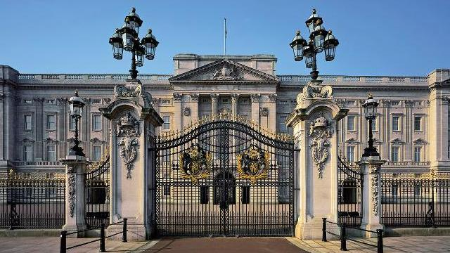
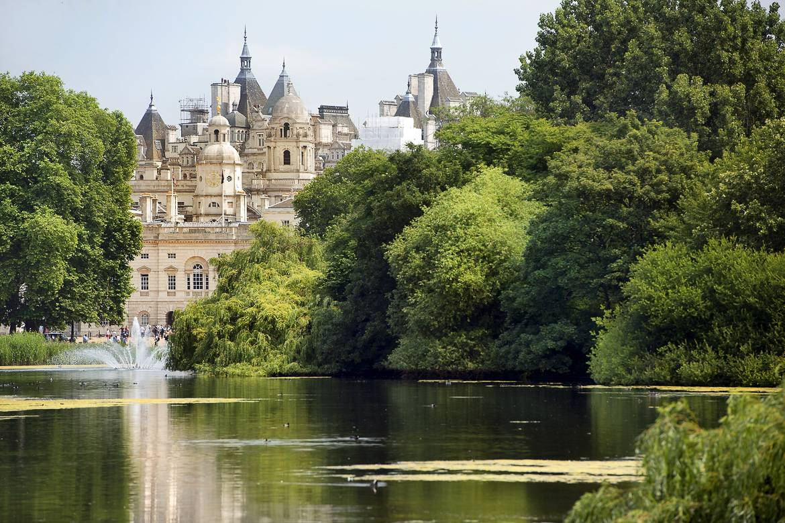
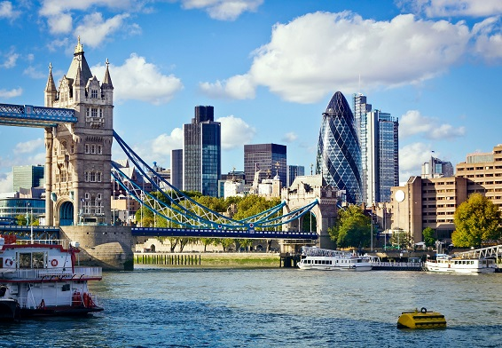
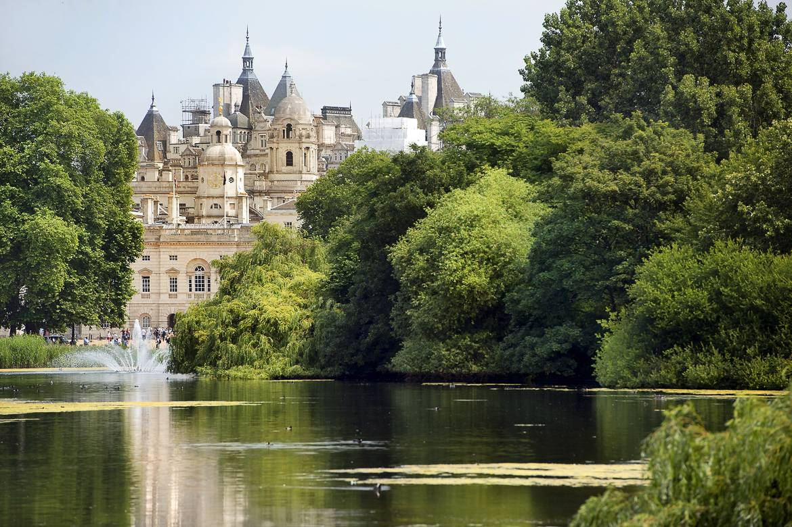
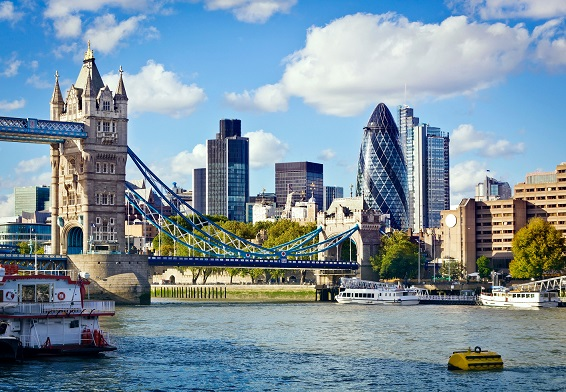

Londres
Bienvenue à Londres
Le surnom de « ville-monde » donné à Londres s'appuie sur une réalité, si bien que chacun devrait la visiter au moins une fois. La ville ne cesse d'absorber les influences et les cultures de ses immigrants, véritables moteurs de la cité, mais elle n'en est pas moins la quintessence de l'âme britannique avec ses célèbres taxis noirs, ses bus rouges à impériale ou ces bâtiments emblématiques que sont Westminster, Tower Bridge ou, plus récemment, le London Eye, dont les silhouettes se reflètent sur les eaux troubles de la Tamise.
Ne manquez pas ces sites, bien sûr, mais il serait aussi dommage de quitter Londres sans avoir dégusté une pinte de bière et une assiette de fish and chips près du fleuve, passé une journée à Hyde Park et une soirée à Soho ou à Shoreditch, comme un véritable londonien. Prenez une grande bouffée d'air et apprêtez-vous à succomber aux charmes de la capitale britannique.
De son centre d'origine romaine à ses marges olympiques, de ses abbayes anciennes à ses gratte-ciel et son architecture contemporaine, Londres convie à un extraordinaire voyage dans l'histoire, à travers une mosaïque d'influences provenant des peuples du monde entier. Découvrez nos balades pour visiter Londres autrement, en famille, de village en village ou hors des sentiers battus.
Les lieux à visiter
-
National Gallery
En plein Londres, ce musée d’art pictural antérieur à 1900 renferme l’une des collections les plus importantes et remarquables du monde. Aux cimaises sont accrochés des chefs-d’oeuvre de Léonard de Vinci, de Michel-Ange, de Titien ou de Velázquez, mais aussi des paysagistes anglais (Gainsborough, Constable ou Turner) ou des impressionnistes et des postimpressionnistes (Van Gogh, Cézanne, Monet et Renoir notamment). Les restaurants et les cafés du musée, remarquables, permettent de conclure la visite en beauté. le musée est un des sites gratuits de Londres : aucune raison de le rater.
-
British Museum
Avec 5 millions de visiteurs par an, le British Museum constitue le site touristique le plus populaire de Londres. Vous pourriez passer votre vie à déambuler dans cette vaste collection d’oeuvres millénaires sans en faire complètement le tour. Elle donne un fabuleux aperçu de la richesse de civilisations antiques – Égypte, Grèce ou Orient ancien par exemple – ou méconnues, comme les cultures africaines. L’entrée, gratuite, invite à revenir et une visite guidée (eyeOpener) cible les pièces maîtresses du musée.
-
Tate Modern
Musée préféré des Londoniens (voire du reste du monde !), cette galerie d’art moderne bénéficie d’un emplacement exceptionnel au pied de la Tamise. Située dans l’ancienne Bankside Power Station, la Tate Modern affiche crânement sa modernité, son génie de la réhabilitation et son accessibilité. L’accès à la collection permanente est gratuit mais il est recommandé d’emprunter la rampe menant à la Turbine Hall, où les remarquables expositions temporaires repoussent les limites conceptuelles et satisferont les amateurs d’art les plus exigeants.
-
Tour de Londres
Peu de lieux au Royaume-Uni sont autant imprégnés d’histoire, de légendes et de superstitions que les murs de cette forteresse. Candidate à la place de monument phare de la capitale, ce château ne se limite pas à son architecture grandiose. On peut aussi y admirer un diamant gros comme le poing, profiter d’une visite gratuite sous la conduite des Yeoman Warders (ou beefeaters), ces guides fièrement sanglés dans leur uniforme Tudor, et écouter en frissonnant le récit de son histoire sanglante.
-
Le Londres sportif
Si vous ne pouvez pas assister à la finale de la FA Cup, le championnat d’Angleterre de football, à Wembley ou à celle du 100m lors des Jeux olympiques de 2012, Londres saura malgré tout vous consoler. L’offre sportive y est conséquente, qu’il s’agisse d’assister à une partie de tennis à Wimbledon, d’encourager les participants du marathon en avril, d’enfourcher un vélo en libre-service pour éviter les embouteillages ou de faire le tour de Battersea Park en petites foulées. Vous pourrez aussi visiter le parc olympique, l’extraordinaire Aquatics Centre et le futuriste vélodrome.
-
Natural History Museum
Un Tyrannosaurus Rex mécanisé, le féérique Wildlife Garden, l’exceptionnel Darwin Centre et une architecture sortie tout droit d’un conte gothique… Voici quelques-uns des éléments qui font le succès du Muséum d’histoire naturelle. Si les enfants en sont la cible privilégiée, les adultes n’en demeureront pas moins bouche bée. Lors des fameuses Nuits blanches du musée, des bambins s’endorment à l’ombre d’un gigantesque diplodocus et, l’hiver, la glace de la patinoire de l’East Lawn (pelouse est) est littéralement prise d’assaut.
-
National Maritime Museum
Au sud de Londres, près de Greenwich et de ses charmants cours d’eau, ce musée relate la tradition maritime de la Grande-Bretagne. L’endroit vous invite à tourner les pages de l’histoire de la grande île vue de la mer : explorateurs au long cours et vaillants marins mais aussi embarcations insolites, comme une péniche d’or de 1732, ou préoccupations environnementales bien contemporaines. L’accueil des enfants est parfaitement assuré, avec engins à manoeuvrer pour occuper les jeunes loups de mer.
-
London Eye
Envie de voir Londres et ses monuments du ciel ? Vous en aurez tout le loisir du haut de cette grande roue érigée au bord de la Tamise. Certes, la file d’attente progresse aussi lentement que le London Eye mais vous n’en savourerez que davantage le moment où la ville se déroulera à vos pieds. Un conseil : évitez les jours de grisaille, ce qui n’est pas simple quand on connaît la météorologie locale. Si vous ne restez que quelques jours, faites-en votre priorité : ainsi, vous pourrez dire sans mentir que vous avez vu toute la ville !
-
Abbaye de Westminster
Les passionnés d’architecture médiévale seront au paradis devant le plus bel exemple du style gothique anglais. Tout comme les fervents admirateurs des têtes couronnées puisque l’abbaye est aussi le lieu consacré du sacre des souverains anglais et des autres grands événements de la famille royale (mariages et enterrements). Ici, chaque recoin raconte une histoire, mais voici nos préférés : la Henry VII Chapel, la plus ancienne porte du Royaume-Uni, le Poet’s Corner, le Coronation Chair, les cloîtres du XIVe siècle, le jardin vieux de 900 ans et les tombes royales. Venez de bonne heure afin d’éviter une trop longue file d’attente.
-
Hyde Park et Kensington Gardens
Le patrimoine végétal de Londres est incomparable. À lui seul, Hyde Park s’étend sur 142 ha ; si l’on ajoute Kensington Gardens, il y a là tout ce dont l’on pourrait rêver : un palais royal dans un cadre victorien d’exception, l’occasion de faire du canotage, d’écouter des concerts en plein air, de visiter une galerie d’art, d’admirer des arbres somptueux ou de se recueillir devant un délicat mémorial de granit dédié à la princesse Diana, le tout en plein centre-ville.
-
Shakespeare’s Globe
Peu d’expériences londoniennes surpassent la découverte de la scène du Globe, le théâtre du XVIe siècle fidèlement recréé. On peut même acquérir un billet pour une place debout, dans le plus pur style élisabéthain. Si vous souhaitez davantage de confort, offrez-vous un siège en galerie. Ce théâtre est un petit miracle d’authenticité, jusqu’à sa structure totalement dénuée de clous, ses poutres de chêne anglais et son toit de chaume identiques à l’original (les extincteurs apportent une touche plus moderne...). Si vous avez un faible pour le célèbre dramaturge, l’architecture et le climat britannique, vous serez aux anges.
-
Carnaval de Notting Hill
Chaque mois d’août, le quartier branché de Notting Hill accueille une immense fête bigarrée. Le plus grand festival de rue d’Europe célèbre 3 jours durant la musique, le mode de vie et la cuisine afro-caribéennes. Plus d’un million de personnes envahissent les rues chaque année, dans une ambiance très caliente. Un événement incontournable pour tous ceux qui souhaitent découvrir Londres la cosmopolite et ses cultures métisses.
Découvrez la beauté de Londres


 


